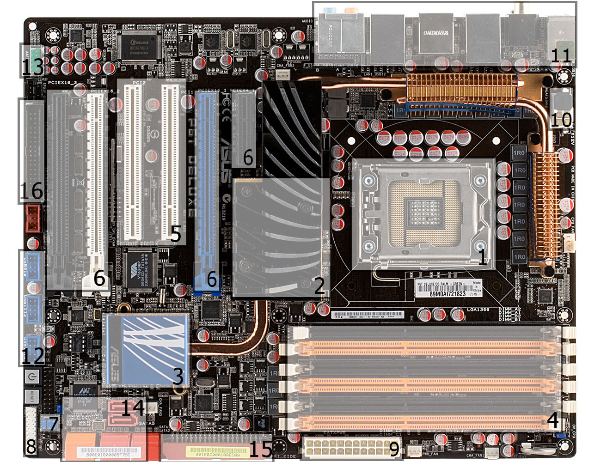

Una scheda madre (plurale schede madri) detta anche piastra madre, in lingua inglese motherboard ("scheda madre") mainboard ("scheda principale"), o meno conosciuta come planar board (scheda piana), abbreviata MB, M/B, mobo, in elettronica e informatica, è un tipo di scheda elettronica principale, raccoglie in sé tutta la circuiteria elettronica e i collegamenti di interfaccia tra i vari componenti interni principali di un personal computer come memoria e le altre schede elettroniche montate o alloggiate sopra, comprendendo anche i bus di espansione e le interfacce verso le periferiche esterne.
